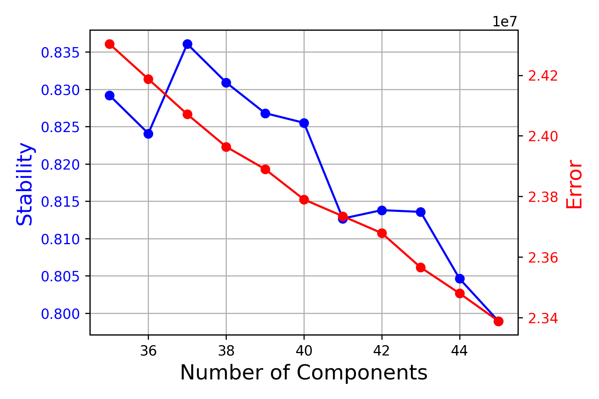

Identifying Conserved Regulators in Clytia and Hydra
This document covers our analysis aimed at identifying conserved regulators of cell-type-specific transcription in Clytia and Hydra. This required that we first perform a motif enrichment analysis on co-expressed genes in the Clytia atlas. For this part of the analysis, we used largely the same approach that we used for the Hydra single-cell atlas, although we had to make some modifications due to the lack of cis-regulatory element annotations for Clytia. After characterizing motif enrichment patterns in the Clytia atlas, we compared results across the Clytia and Hydra single-cell datasets to identify instances where both the expression of a transcription factor and the enrichment pattern of its motif were conserved in the two species.
Identifying Conserved Regulators in Clytia and HydraGene Co-Expression Analysis Using Non-Negative Matrix Factorization (NMF)Analysis of Motif EnrichmentComparing Motif Enrichment and Transcription Factor Expression Conservation in Clytia and HydraAnalysis Using Bona Fide Motif SequencesAnalysis Using Shuffled Motif SequencesFiles Associated with This Document
Gene Co-Expression Analysis Using Non-Negative Matrix Factorization (NMF)
Our first goal was to identify gene co-expression modules in the Clytia single-cell atlas using non-negative matrix factorization (NMF). For a description on the basic principles of NMF and our approach to applying it to single-cell expression data, see 05_hydraAtlasReMap.md
We first imported the Seurat object containing the re-mapped Clytia single-cell data (generated in 11_clytiaAtlasReMap.md) into R and then exported both the raw and normalized read count matrices to tsv files, along with a list of the variable genes used for the Seurat clustering.
(01_clNMF/clNMF.R)
library(Seurat)library(rstudioapi)
setwd(dirname(getActiveDocumentContext()$path))
cl <- readRDS('initSeurat.rds')
####NMF prep####rawC <- t(as.matrix(cl@assays$RNA@counts))write.table(rawC,file="cl.raw.counts.tsv",sep = '\t', quote = F)rm(rawC)
normC <- t(as.matrix(cl@assays$SCT@data))write.table(normC,file="cl.norm.counts.tsv",sep = '\t', quote = F)rm(normC)
#list of variable genes to look atwrite.table(cl@assays$SCT@var.features, file = 'cl.genes.tsv', row.names = F, col.names = F, quote = F)We then set up a cNMF run to do a parameter sweep to determine the number of metagenes (k) to use:
(01_clNMF/runPrep.sh)
xxxxxxxxxx#SBATCH -p med#SBATCH --job-name=prep#SBATCH -c 2#SBATCH -t 60-0#SBATCH --mem=16G#SBATCH --error=prep.err#SBATCH --output=prep.out
source ~/.bash_profile
conda activate cnmf_env
python ../cNMF/cnmf.py prepare --name cl_course \ -c cl.raw.counts.tsv \ -k 15 20 25 30 35 40 45 50 55 60 65 70 75 80 85 90 \ --n-iter 200 \ --total-workers 15 \ --seed 12345 \ --tpm cl.norm.counts.tsv \ --genes-file cl.genes.tsvWe then ran the primary factorization step of the cNMF analysis:
(01_clNMF/runFactorize.sh)
xxxxxxxxxx#SBATCH --job-name=factorize#SBATCH -p med#SBATCH -c 2#SBATCH -t 60-0#SBATCH --array=0-14#SBATCH --mem=8G#SBATCH --error=factorize_%a.err#SBATCH --output=factorize_%a.out
source ~/.bash_profile
conda activate cnmf_env
python ../cNMF/cnmf.py factorize --name cl_course --worker-index $SLURM_ARRAY_TASK_IDWe pooled the resulting analysis files:
(01_clNMF/runCombine.sh)
xxxxxxxxxx#SBATCH --job-name=combine#SBATCH -p bigmemm #SBATCH -c 1#SBATCH -t 60-0#SBATCH --mem=24G#SBATCH --error=combine.err#SBATCH --output=combine.out
source ~/.bash_profile
conda activate cnmf_env
python ../cNMF/cnmf.py combine --name cl_courseAnd visualized stability and error metrics to select the approximate K value to use:
(01_clNMF/runKselect.sh)
xxxxxxxxxx#SBATCH --job-name=combine#SBATCH -p bigmemm #SBATCH -c 1#SBATCH -t 60-0#SBATCH --mem=24G#SBATCH --error=combine.err#SBATCH --output=combine.out
source ~/.bash_profile
conda activate cnmf_env
python ../cNMF/cnmf.py k_selection_plot --name cl_courseBased on this plot, we selected the K range from 35-45. We then performed a finer grained parameter sweep to identify the 'best' k value within that range.
We re-prepped the analysis for the new range of K values:
(01_clNMF/runPrep2.sh)
xxxxxxxxxx#SBATCH -p med#SBATCH --job-name=prep#SBATCH -c 2#SBATCH -t 60-0#SBATCH --mem=24G#SBATCH --error=prep2.err#SBATCH --output=prep2.out
source ~/.bash_profile
conda activate cnmf_env
python ../cNMF/cnmf.py prepare --name cl_fine \ -c cl.raw.counts.tsv \ -k 35 36 37 38 39 40 41 42 43 44 45 \ --n-iter 200 \ --total-workers 15 \ --seed 12345 \ --tpm cl.norm.counts.tsv \ --genes-file cl.genes.tsvWe then ran the factorization step:
(01_clNMF/runFactorize2.sh)
xxxxxxxxxx#SBATCH --job-name=factorize#SBATCH -p med#SBATCH -c 2#SBATCH -t 60-0#SBATCH --array=0-14#SBATCH --mem=8G#SBATCH --error=factorizeB_%a.err#SBATCH --output=factorizeB_%a.out
source ~/.bash_profile
conda activate cnmf_env
python ../cNMF/cnmf.py factorize --name cl_fine --worker-index $SLURM_ARRAY_TASK_IDCombined the resulting files:
(01_clNMF/runCombine2.sh)
xxxxxxxxxx#SBATCH --job-name=combine#SBATCH -p bigmemm #SBATCH -c 1#SBATCH -t 60-0#SBATCH --mem=24G#SBATCH --error=combine.err#SBATCH --output=combine.out
source ~/.bash_profile
conda activate cnmf_env
python ../cNMF/cnmf.py combine --name cl_fineAnd visualized the stability and error metrics:
(01_clNMF/runKselect2.sh)
xxxxxxxxxx#SBATCH --job-name=kSel#SBATCH -p bigmemm #SBATCH -c 1#SBATCH -t 60-0#SBATCH --mem=24G#SBATCH --error=kSel.err#SBATCH --output=kSel.out
source ~/.bash_profile
conda activate cnmf_env
python ../cNMF/cnmf.py k_selection_plot --name cl_fine
Based on these results, we selected 37 as the number of metagenes to use in downstream analyses.
We then had to generate consensus results from the 200 replicates run for the 37-metagene analysis. We initially screened the similarity of the different runs using a permissive threshold setting (we retained runs with distances < 2.0) for the consensus function.
(01_clNMF/runConseunsus2.sh)
xxxxxxxxxx#SBATCH --job-name=consensus#SBATCH -p bigmemm#SBATCH -c 1#SBATCH -t 60-0#SBATCH --mem=24G#SBATCH --error=consensus.err#SBATCH --output=consensus.out
source ~/.bash_profile
conda activate cnmf_env
python ../cNMF/cnmf.py consensus --name cl_fine --local-density-threshold 2.00 --components 37 --show-clustering
Based on the distance distribution, we set the cutoff to 0.13 to remove outliers:
(01_clNMF/runConseunsus2.sh)
xxxxxxxxxx#SBATCH --job-name=consensus#SBATCH -p bigmemm#SBATCH -c 1#SBATCH -t 60-0#SBATCH --mem=24G#SBATCH --error=consensus.err#SBATCH --output=consensus.out
source ~/.bash_profile
conda activate cnmf_env
python ../cNMF/cnmf.py consensus --name cl_fine --local-density-threshold 0.13 --components 37 --show-clustering
To link the gene co-expression programs from NMF to potential cell types/functions, we plotted the cell scores for each metagene on the UMAP from the original Clytia atlas publication (using a Seurat object generated in 11_clytiaAtlasReMap.md)
(01_clNMF/visNMF.R)
xxxxxxxxxxlibrary(Seurat)library(rstudioapi)library(patchwork)
setwd(dirname(getActiveDocumentContext()$path))
#import UMAP from original clytia publicationcl <- readRDS('annotatedCl.rds')
#k37 course NMF module score visualization
#import nmf cell scoresk37.usage <- read.delim('nmf/cl_fine.usages.k_37.dt_0_13.consensus.txt',row.names = 1)
#normalize cell scores so that all scores in a cell sum to 1k37.usage <- t(apply(k37.usage,1,function(x) x/sum(x)))
#append metagene cell scores to seurat metadatamd <- cl@meta.data
md$id <- rownames(md)
k37.usage <- as.data.frame(k37.usage)
colnames(k37.usage) <- gsub('X','mg',colnames(k37.usage))
#import metagene descriptions#(based on initial review of cell score plots)mgD <- read.csv('nmf/clMetaAnnot.csv',header = F)
colnames(k37.usage) <- paste(colnames(k37.usage), mgD$V2,sep=' ')
k37.usage$id <- rownames(k37.usage)
md <- merge(md, k37.usage, by = 'id',all.x = T)
md[is.na(md)] <- 0
rownames(md) <- md$id
md$id <- NULL
cl@meta.data <- md
#plot metagene cell scores on the clytia UMAPplotMods <- grep('mg',colnames(cl@meta.data),value = T)
gg <- FeaturePlot(cl,plotMods[1],order=T) + NoLegend() + NoAxes()
for(i in 2:length(plotMods)){ subGG <- FeaturePlot(cl,plotMods[i],order=T) + NoLegend() + NoAxes() gg <- gg + subGG}
dims <- sqrt(37)dims <- c(ceiling(dims),floor(dims))
png('k37usage.png',4*dims[1],height = 5*dims[2],units = 'in',res = 300)gg + plot_layout(dims[1])dev.off()
Analysis of Motif Enrichment
In order to use the NMF results for an enrichment analysis, we needed a way of isolating regulatory sequence associated with genes belonging to different metagenes; however, we did not have access to ATAC-seq or histone modification data for the Clytia genome. In addition, because there was little to no conservation in non-coding regions when comparing the Clytia genome to various Hydra genomes, we couldn't use phylogenetic footprinting to identify putative transcription factor binding sites. We therefore selected putative regulatory sequences by simply using the 1000 bp of sequence upstream of gene transcription start sites, since this region is very likely to contain at least some sequence with regulatory function.
Our approach for identifying enriched motifs in Hydra was based on a gene set enrichment analysis framework; however, this method relies on relatively low false positive rates for binding site predictions, which we didn't have for the Clytia genome. We therefore used the analysis of motif enrichment (AME) pipeline from the meme suite of software tools to perform a more conventional motif enrichment analysis.
AME requires a list of sequences that have been scored in a way that assigns 'positive' sequences (e.g., genes strongly associated with a particular metagene) a small score and 'negative' sequences a high score. To generate scores that fit this criterion, we simply reversed the sign of the metagene gene scores, which use positive values to indicate a strong association between a gene and a metagene.
In the following R script, we use the Clytia gene models (generated in 11_clytiaAtlasReMap.md) to determine the coordinates of 1000 bp long regions just upstream of TSS. Then, for each metagene in the Clytia NMF analysis, we assigned each putative promoter a score based on how strongly its nearby gene was associated with the metagene of interest. These results were then exported as bed files (titled mg#_ScoredProms.bed where the number corresponded to the metagene used to assign the gene scores for that particular bed file).
(02_clEnrichment/enrichPrep.R)
xxxxxxxxxxlibrary(rstudioapi)library(plyr)
setwd(dirname(getActiveDocumentContext()$path))
#import NMF results to get coexpressed genes
clNMF <- read.delim('../nmf/cl_fine.gene_spectra_score.k_37.dt_0_13.txt',row.names = 1)
#load genome annotation
clGtf <- read.delim('../../clFinal.merge.longestIso.rename.gtf',header = F)
clGtf <- clGtf[clGtf$V3 == 'gene',]
#reset coordinates to correspond to putative promoter regions (1000 bp upstream to TSS)
newCoords <- clGtf[,c(4,5,7)]
newCoords.p <- newCoords[newCoords$V7 == '+',]
newCoords.p$V5 <- newCoords.p$V4 + 100
newCoords.p$V4 <- newCoords.p$V4 - 1000
newCoords.m <- newCoords[newCoords$V7 == '-',]
newCoords.m$V4 <- newCoords.m$V5 - 100
newCoords.m$V5 <- newCoords.m$V5 + 1000
clGtf[clGtf$V7 == '+',c(4,5)] <- newCoords.p[,1:2]
clGtf[clGtf$V7 == '-',c(4,5)] <- newCoords.m[,1:2]
#convert from 1 based to 0 based coordinates
clGtf$V4 <- clGtf$V4 - 1
#convert to bed-like table
clBed <- clGtf[,c(1,4,5,9,6,7)]
clBed$V9 <- gsub(' ;.*','',clBed$V9)
clBed$V9 <- gsub('gene_id ','',clBed$V9)
clBed$V4[clBed$V4 < 0] <- 0
#import chrom sizescSizes <- read.delim('../../../cl/clytiaG.fa.fai', header = F)
#truncate any coordinates that go beyond the chrom boundariesclBed$max <- as.numeric(mapvalues(clBed$V1, from = cSizes$V1, to = cSizes$V2, warn_missing = F))
clBed$V5[clBed$V5 > clBed$max] <- clBed[clBed$V5 > clBed$max,'max']
clBed$max <- NULL
#generate versions of bed file for each metagene with a score for each gene
clNMF <- as.data.frame(t(clNMF))
clNMF$ID <- rownames(clNMF)
clNMF$ID <- gsub('[.]','_',clNMF$ID)
unlink('mgBeds',recursive = T)dir.create('mgBeds',showWarnings = F)
options(scipen = 999)
lapply(1:37,function(x){ clBed.mgs <- clBed #drop genes without a score clBed.mgs <- clBed.mgs[clBed.mgs$V9 %in% clNMF$ID,] clBed.mgs$score <- as.numeric(mapvalues(clBed.mgs$V9,from=clNMF$ID,to=clNMF[,x],warn_missing = F)) #need to invert score so that genes strongly associated with the mg have small values clBed.mgs$score <- -clBed.mgs$score #order by score clBed.mgs <- clBed.mgs[order(clBed.mgs$score),] clBed.mgs$score <- (clBed.mgs$score - min(clBed.mgs$score)) + 1e-6 #combine score with name clBed.mgs$V9 <- paste(clBed.mgs$V9,clBed.mgs$score,sep = ' ') clBed.mgs$score <- NULL write.table(clBed.mgs,paste0('mgBeds/','mg',x,'_scoredProms.bed'),row.names = F, col.names = F, sep = '\t', quote = F)})The bed files were then used to extract FASTA sequences from the Clytia genome for all putative promoter sequences. The headers of this fasta file also contained metagene scores for the corresponding gene model.
(02_clEnrichment/bedToFasta.sh)
xxxxxxxxxx
cd mgBeds
for arg in *beddo newName="${arg/bed/fa}" bedtools getfasta -nameOnly -s -fi ../../../clytiaG.fa -bed $arg > "$newName" gsed -i 's/(.*)//g' "$newName"doneIn addition to the fasta sequences generated above, we also needed to generate a background file that specified the nucleotide frequencies in the Clytia genome. This was done using the following command:
fasta-get-markov clytiaG.fa > clytiaBG.txt
We then performed AME on each of our metagene-specific promoter FASTA files to get motif enrichment results for each metagene. We used the pooledJasparNR.meme.txt motif database generated as part of the analysis described in 07_genomeConservation.md
(02_clEnrichment/runAme.sh)
xxxxxxxxxx
for arg in mgBeds/*fado outName="${arg/_scoredProms.fa/}" outName="${outName/mgBeds\//}" ame --oc enOut/$outName \ --bfile clytiaBG.txt \ $arg pooledJasparNR.meme.txtdoneUsing the following R script, we pooled all the individual AME output files into a single enrichment results table. We then calculated a fold-enrichment score for each significant enrichment result (we used an E-value threshold of 10) by dividing the % of positive (i.e., strongly metagene-associated) genes that contained the target motif by the % of negative genes that contained the target motif. We then mapped these fold-enrichment scores onto the Clytia single cell atlas by generating a weighted average of fold-enrichment values for each motif for each cell using the NMF metagene cell scores. These single-cell enrichment scores were then used in a subsequent analysis to identify conserved motif enrichment patterns in Clytia and Hydra. Finally, we generated a motif by metagene heat map of enrichment scores to summarize the results.
(02_clEnrichment/visClEn.R)
xxxxxxxxxxlibrary(rstudioapi)library(plyr)library(gplots)library(viridis)
setwd(dirname(getActiveDocumentContext()$path))
#list clytia enrichment result filesclEn.files <- list.files('enOut', pattern='ame.tsv',recursive = T, full.names = T)
#import clytia enrichment tablesclEn <- lapply(clEn.files, read.delim)
#drop comment lines from resultsclEn <- lapply(clEn,function(x) x[!grepl('^#',x[,1]),])
#attach metagene IDs to objects in listnames(clEn) <- gsub('.*(mg\\d+)/ame.tsv','\\1',clEn.files)
#drop empty resultsclEn <- clEn[sapply(clEn,length) > 0]
#add in column listing the metagene used to #calculate the states for that rowclEn.DF <- lapply(1:length(clEn),function(x){ newDf <- clEn[[x]] newDf$mg <- names(clEn)[x] return(newDf)})
#collapse into DFclEn.DF <- do.call(rbind,clEn.DF)
####plotting####
#generate clytia enrichment scores#will just base it on fold enrichmentclEn.DF$fc <- clEn.DF$X.TP/clEn.DF$X.FP
write.csv(clEn.DF,'clEnrichmentRes.csv',row.names = F)
#get list of all enriched motifsmotsUse <- unique(clEn.DF$motif_ID)
#load cl metagene cell scoresclNMF <- read.delim('../nmf/cl_fine.usages.k_37.dt_0_13.consensus.txt',row.names = 1)
#normalize cell scores so that the scores for a single cell sum to 1clNMF <- t(apply(clNMF,1,function(x) x/sum(x)))
#for each enriched motif, go through each metagene that shows enrichment and multiply the fold enrichment by the cell scoreenScores <- lapply(motsUse,function(x){ motRes <- clEn.DF[clEn.DF$motif_ID == x,] motScores <- apply(motRes,1,function(y){ mgUse <- as.numeric(gsub('mg','',y[18])) return(clNMF[,mgUse] * as.numeric(y[19])) }) motScores <- apply(motScores,1,sum) return(motScores)})
#get motif name (as opposed to JASPAR ID)names(enScores) <- mapvalues(motsUse,from=clEn.DF$motif_ID,to=clEn.DF$motif_alt_ID,warn_missing = F)
#collapse to matrix#this can be used to generate UMAP plots of enrichment scoresenScores <- do.call(cbind,enScores)
saveRDS(enScores,'clEnScores.rds')
#make matrix for heatmap plotting (motif by metagene enrichment score heatmap)enScores.hm <- lapply(motsUse,function(x){ motRes <- clEn.DF[clEn.DF$motif_ID == x,] mgIndex <- as.numeric(gsub('mg','',motRes$mg)) enRow <- rep(0,37) enRow[mgIndex] <- motRes$fc enRow <- enRow/max(enRow) names(enRow) <- paste0('mg',1:37) return(enRow)})
#collapse to matrixenScores.hm <- do.call(rbind,enScores.hm)
#add in motif name to rownamesmotsUse.names <- unique(clEn.DF$motif_alt_ID)
rownames(enScores.hm) <- paste(motsUse,motsUse.names,sep=' ')
#bring in metagene descriptions for colnamesmgAnnot <- read.csv('../nmf/clMetaAnnot.csv',header=F)
colnames(enScores.hm) <- paste(colnames(enScores.hm),mgAnnot$V2,sep=' ')
#reorder the columns so their grouped more logicallycolOrder <- read.csv('../nmf/clMgOrder.csv',header=F)
enScores.hm <- enScores.hm[,colOrder$V1]
#plot enrichment heatmappdf('clMotifHeatmap.pdf',width = 15,height = 60)heatmap.2(enScores.hm, Colv = F, scale = 'none', dendrogram = 'none', col = viridis(30), trace='none', key = F, keysize = 0.1, margins = c(10,10), colsep = c(3,9,15,24,33,35), distfun = function(x) as.dist(1-cor(t(x))), hclustfun = function(x) hclust(x, method="average"))dev.off()
write.csv(enScores.hm,file='clEnHeatmap.csv')
Comparing Motif Enrichment and Transcription Factor Expression Conservation in Clytia and Hydra
Analysis Using Bona Fide Motif Sequences
We next wanted to compare the motif enrichment results for Clytia and Hydra using our aligned single-cell atlas. To do this, we adopted a strategy that was similar to the method we used to identify genes with conserved expression patterns (described in 12_crossSpeciesAtlasAlignment.md).
We had already generated single-cell motif enrichment scores for each species, so to identify the motifs that had similar enrichment patterns in the aligned principal component space we generated pseudo-cells using a high resolution louvain clustering analysis. We could then use these pseudo-cells to group small sets of cells from each species together and thus identify motifs with similar pseudo-cell enrichment patterns in the two species.
To begin, we imported the single-cell enrichment scores for Clytia and Hydra along with the aligned cross-species atlas. We then generated pseudo-cells using the Seurat implementation of the Louvain clustering algorithm.
(03_crossCompare/enrichComp.R)
xxxxxxxxxxlibrary(rstudioapi)library(plyr)library(Seurat)library(ggplot2)library(gplots)library(viridis)
setwd(dirname(getActiveDocumentContext()$path))
#import clytia enrichmentenScores <- readRDS('../cl/remap/enrichment/clEnScores.rds')
clEn.DF <- read.csv('../cl/remap/enrichment/clEnrichmentRes.csv')
#load hydra motif enrichment scoreshvEn <- readRDS('../nmf/motScores.rds')
#disregard non-conserved motifsmotifCon <- read.csv('../../alignment_conservation/motifConservationStats.csv',row.names = 1)
motifCon.keep <- rownames(motifCon[motifCon$res == 'enriched',])
hvEn <- hvEn[,colnames(hvEn) %in% motifCon.keep]
#look for similar enrichment patterns using psuedocellshvCl <- readRDS('aepClInt.rds')
hvCl <- FindClusters(hvCl, resolution = 10, graph.name = 'integrated_snn')
DefaultAssay(hvCl) <- 'SCT'
DimPlot(hvCl, group.by = 'integrated_snn_res.10') + NoLegend() + NoAxes()
We next calculated the average enrichment score for each motif in our results matrices, grouping cells first by species then by pseudo-cell. We then calculated a correlation score to compare enrichment patterns across pseudo-cells in the two species.
xxxxxxxxxx#export version of hydra enrichment table with pseudocell info for cellshvEn.exp <- hvEn
hvEn.exp$pseudoCell <- mapvalues(rownames(hvEn), from = colnames(hvCl), to = hvCl$integrated_snn_res.10,warn_missing = F)
#drop any cells not grouped into a psuedocell in the enrichment results matrixhvEn.exp <- hvEn.exp[grepl('^\\d',hvEn.exp$pseudoCell),]
#drop non-conserved/non-enriched motifshvEn <- hvEn[,colnames(hvEn) %in% clEn.DF$motif_ID]
#use motif name instead of motif IDcolnames(hvEn) <- mapvalues(colnames(hvEn),from = clEn.DF$motif_ID,to = clEn.DF$motif_alt_ID,warn_missing = F)
#export version of clytia enrichment table with pseudocell info for cellsenScores.pc <- as.data.frame(enScores[rownames(enScores) %in% colnames(hvCl),])enScores.pc.id <- mapvalues(rownames(enScores.pc),from=colnames(hvCl),to=hvCl$integrated_snn_res.10,warn_missing = F)
enScores.pc.exp <- as.data.frame(enScores.pc)enScores.pc.exp$pseudoCell <- enScores.pc.id
#calculate average enrichment score for each motif for each pseudo-cell#first for clytiaenScores.pc <- split(enScores.pc,enScores.pc.id)enScores.pc <- lapply(enScores.pc,function(x) apply(x,2,mean))
enScores.pc <- do.call(rbind,enScores.pc)
#then for hydrahvEn.pc <- as.data.frame(hvEn[rownames(hvEn) %in% colnames(hvCl),])hvEn.pc.id <- mapvalues(rownames(hvEn.pc),from=colnames(hvCl),to=hvCl$integrated_snn_res.10,warn_missing = F)
hvEn.pc <- split(hvEn.pc,hvEn.pc.id)hvEn.pc <- lapply(hvEn.pc,function(x) apply(x,2,mean))
hvEn.pc <- do.call(rbind,hvEn.pc)
#restrict psuedo-cells and motifs to only those that are present in both specieshvEn.pc <- hvEn.pc[,colnames(hvEn.pc) %in% colnames(enScores.pc)]enScores.pc <- enScores.pc[,colnames(enScores.pc) %in% colnames(hvEn.pc)]
hvEn.pc <- hvEn.pc[rownames(hvEn.pc) %in% rownames(enScores.pc),]enScores.pc <- enScores.pc[rownames(enScores.pc) %in% rownames(hvEn.pc),]
hvEn.pc <- hvEn.pc[,colnames(enScores.pc)]
write.csv(hvEn.pc,'pcAveHvEn.csv')write.csv(enScores.pc,'pcAveClEn.csv')
#calculate correlation scores across pseudo-cells for each motifcrossMotCor <- vapply(1:ncol(hvEn.pc),function(x){ cor(hvEn.pc[,x], enScores.pc[,x], method = 'pearson')},numeric(1))
crossMotCor <- data.frame(motID = colnames(enScores.pc),crossMotCor)
#reduce redundancy of cor scoreslrMots <- read.csv('../nmf/hydraEnrichmentMatrixLR.csv')[,1]
lrMots <- gsub('.* ','',lrMots)
crossMotCor <- crossMotCor[crossMotCor$motID %in% lrMots,]
#subset to look only at high scoring enrichment resultscrossMotCor.match <- crossMotCor[crossMotCor$crossMotCor > 0.5,]
#export correlation resultswrite.csv(crossMotCor,'crossMotCor.csv',row.names = F)In order to identify putative conserved regulators, we manually reviewed the results contained in the crossMotCor object from this analysis (which contained correlation values indicating the degree of similarity in motif enrichment patterns in the two species), as well as the transcription factor expression conservation results described in 12_crossSpeciesAtlasAlignment.md. This revealed the conserved regulators presented in figure 4. We used the following code to visualize these conserved enrichment and expression patterns in the aligned cross-species atlas (here we show example plots for ebf):
xxxxxxxxxx#function for plotting motif enrichment scores for each species using the aligned seurat objectmotScorePlot <- function(x){ newMD <- hvCl@meta.data newMD$cID <- rownames(newMD) motCheck <- x motScoreDF <- data.frame(cID = c(rownames(enScores),rownames(hvEn)), motScore = c(enScores[,motCheck],hvEn[,motCheck])) newMD <- merge(newMD,motScoreDF,by='cID',all.x=T) newMD[is.na(newMD$motScore),'motScore'] <- 0 rownames(newMD) <- newMD$cID newMD$cID <- NULL newMD <- newMD[colnames(hvCl),] hvCl@meta.data <- newMD gg <- FeaturePlot(hvCl,'motScore',split.by = 'species',pt.size = 0.6,order = T,combine=F) gg[[1]] + theme_void() + theme(plot.title = element_blank()) ggsave(paste0('enPlot_',x,'_aep.png'),width = 5.5,height=5,dpi=450) gg[[2]] + theme_void() + theme(plot.title = element_blank()) ggsave(paste0('enPlot_',x,'_cl.png'),width = 5.5,height=5,dpi=450)}
motScorePlot('EBF3')
gg <- FeaturePlot(hvCl,'HVAEP1-G005780',split.by = 'species',order = T,pt.size=0.6,combine=F)gg[[1]] + theme_void() + theme(plot.title = element_blank())ggsave('ebfTran_aep.png',width = 5.5,height=5,dpi=450)
gg[[2]] + theme_void() + theme(plot.title = element_blank())ggsave('ebfTran_cl.png',width = 5.5,height=5,dpi=450)(EBF3 motif enrichment for Hydra)

(EBF3 motif enrichment for Clytia)

(ebf expression in Hydra)
(ebf expression in Clytia)
Analysis Using Shuffled Motif Sequences
To determine if the similarities in motif enrichment patterns we observed in the two species were greater than would be expected based on chance, we repeated our enrichment comparison analysis using results based on shuffled versions of each transcription factor binding motif.
This required that we re-run the AME analysis using shuffled versions of each motif in our database (the generation of these shuffled motifs is described in 07_genomeConservation.md)
(02_clEnrichment/runAmeShuf.sh)
xxxxxxxxxx
for arg in mgBeds/*fado outName="${arg/_scoredProms.fa/}" outName="${outName/mgBeds\//}" ame --oc enOutShuf/$outName \ --bfile clytiaBG.txt \ $arg shuffledJasparMotifs.meme.txtdoneWe then transferred these enrichment results onto the Clytia single cell atlas by generating single-cell enrichment scores for each motif. As with the Hydra enrichment analysis (described in 10_hydraRegulators.md ), we found that shuffling the motifs completely changed the resulting enrichment patterns, demonstrating that our enrichment results were not primarily being driven by sequence bias artifacts.
xxxxxxxxxxlibrary(rstudioapi)library(plyr)library(gplots)library(viridis)
setwd(dirname(getActiveDocumentContext()$path))
#list clytia enrichment result filesclEn.files <- list.files('enOutShuf', pattern='ame.tsv',recursive = T, full.names = T)
#import clytia enrichment tablesclEn <- lapply(clEn.files, read.delim)
#drop comment lines from resultsclEn <- lapply(clEn,function(x) x[!grepl('^#',x[,1]),])
#attach metagene IDs to objects in listnames(clEn) <- gsub('.*(mg\\d+)/ame.tsv','\\1',clEn.files)
#drop empty resultsclEn <- clEn[sapply(clEn,length) > 0]
#add in column listing the metagene used to #calculate the states for that rowclEn.DF <- lapply(1:length(clEn),function(x){ newDf <- clEn[[x]] newDf$mg <- names(clEn)[x] return(newDf)})
#collapse into DFclEn.DF <- do.call(rbind,clEn.DF)
####plotting####
#generate clytia enrichment scores#will just base it on fold enrichmentclEn.DF$fc <- clEn.DF$X.TP/clEn.DF$X.FP
write.csv(clEn.DF,'clEnrichmentResShuf.csv',row.names = F)
#get list of all enriched motifsmotsUse <- unique(clEn.DF$motif_ID)
#load cl metagene cell scoresclNMF <- read.delim('../nmf/cl_fine.usages.k_37.dt_0_13.consensus.txt',row.names = 1)
#normalize cell scores so that the scores for a single cell sum to 1clNMF <- t(apply(clNMF,1,function(x) x/sum(x)))
#for each enriched motif, go through each metagene that shows enrichment and multiply the fold enrichment by the cell scoreenScores <- lapply(motsUse,function(x){ motRes <- clEn.DF[clEn.DF$motif_ID == x,] motScores <- apply(motRes,1,function(y){ mgUse <- as.numeric(gsub('mg','',y[18])) return(clNMF[,mgUse] * as.numeric(y[19])) }) motScores <- apply(motScores,1,sum) return(motScores)})
#get motif name (as opposed to JASPAR ID)names(enScores) <- mapvalues(motsUse,from=clEn.DF$motif_ID,to=clEn.DF$motif_alt_ID,warn_missing = F)
#collapse to matrix#this can be used to generate UMAP plots of enrichment scoresenScores <- do.call(cbind,enScores)
saveRDS(enScores,'clEnScoresShuf.rds')
#make matrix for heatmap plotting (motif by metagene enrichment score heatmap)enScores.hm <- lapply(motsUse,function(x){ motRes <- clEn.DF[clEn.DF$motif_ID == x,] mgIndex <- as.numeric(gsub('mg','',motRes$mg)) enRow <- rep(0,37) enRow[mgIndex] <- motRes$fc enRow <- enRow/max(enRow) names(enRow) <- paste0('mg',1:37) return(enRow)})
#collapse to matrixenScores.hm <- do.call(rbind,enScores.hm)
#add in motif name to rownamesmotsUse.names <- unique(clEn.DF$motif_alt_ID)
rownames(enScores.hm) <- paste(motsUse,motsUse.names,sep=' ')
#bring in metagene descriptions for colnamesmgAnnot <- read.csv('../nmf/clMetaAnnot.csv',header=F)
colnames(enScores.hm) <- paste(colnames(enScores.hm),mgAnnot$V2,sep=' ')
#reorder the columns so their grouped more logicallycolOrder <- read.csv('../nmf/clMgOrder.csv',header=F)
enScores.hm <- enScores.hm[,colOrder$V1]
#plot enrichment heatmappdf('clMotifHeatmapShuf.pdf',width = 15,height = 60)heatmap.2(enScores.hm, Colv = F, scale = 'none', dendrogram = 'none', col = viridis(30), trace='none', key = F, keysize = 0.1, margins = c(10,10), colsep = c(3,9,15,24,33,35), distfun = function(x) as.dist(1-cor(t(x))), hclustfun = function(x) hclust(x, method="average"))dev.off()
write.csv(enScores.hm,file='clEnHeatmapShuf.csv')
We then looked for similarities in the enrichment patterns of these shuffled motifs across the Hydra and Clytia atlases. We found that no shuffled motifs showed signs of conservation (defined as having a correlation score > 0.5). This suggests that the similarities in motif enrichment across homologous cell types that we observed in our analysis using bona fide motif sequences are unlikely to have been driven purely by chance.
(03_crossCompare/enrichCompShuf.R)
xxxxxxxxxxlibrary(rstudioapi)library(plyr)library(Seurat)library(ggplot2)library(gplots)library(viridis)
setwd(dirname(getActiveDocumentContext()$path))
#import clytia enrichmentenScores <- readRDS('../cl/remap/enrichment/clEnScoresShuf.rds')
clEn.DF <- read.csv('../cl/remap/enrichment/clEnrichmentResShuf.csv')
#load hydra motif enrichment scoreshvEn <- readRDS('../nmf/motScores_shuf.rds')
#disregard non-conserved motifsmotifCon <- read.csv('../../alignment_conservation/motifConservationStats.csv',row.names = 1)
motifCon.keep <- rownames(motifCon[motifCon$res == 'enriched',])
hvEn <- hvEn[,colnames(hvEn) %in% motifCon.keep]
#look for similar enrichment patterns using psuedocellshvCl <- readRDS('aepClInt.rds')
hvCl <- FindClusters(hvCl, resolution = 10, graph.name = 'integrated_snn')
DefaultAssay(hvCl) <- 'SCT'
DimPlot(hvCl, group.by = 'integrated_snn_res.10') + NoLegend() + NoAxes()
#export version of hydra enrichment table with pseudocell info for cellshvEn.exp <- hvEn
hvEn.exp$pseudoCell <- mapvalues(rownames(hvEn), from = colnames(hvCl), to = hvCl$integrated_snn_res.10,warn_missing = F)
#drop any cells not grouped into a psuedocell in the enrichment results matrixhvEn.exp <- hvEn.exp[grepl('^\\d',hvEn.exp$pseudoCell),]
#drop non-conserved/non-enriched motifshvEn <- hvEn[,colnames(hvEn) %in% clEn.DF$motif_ID]
#use motif name instead of motif IDcolnames(hvEn) <- mapvalues(colnames(hvEn),from = clEn.DF$motif_ID,to = clEn.DF$motif_alt_ID,warn_missing = F)
#export version of clytia enrichment table with pseudocell info for cellsenScores.pc <- as.data.frame(enScores[rownames(enScores) %in% colnames(hvCl),])enScores.pc.id <- mapvalues(rownames(enScores.pc),from=colnames(hvCl),to=hvCl$integrated_snn_res.10,warn_missing = F)
enScores.pc.exp <- as.data.frame(enScores.pc)enScores.pc.exp$pseudoCell <- enScores.pc.id
#calculate average enrichment score for each motif for each pseudo-cell#first for clytiaenScores.pc <- split(enScores.pc,enScores.pc.id)enScores.pc <- lapply(enScores.pc,function(x) apply(x,2,mean))
enScores.pc <- do.call(rbind,enScores.pc)
#then for hydrahvEn.pc <- as.data.frame(hvEn[rownames(hvEn) %in% colnames(hvCl),])hvEn.pc.id <- mapvalues(rownames(hvEn.pc),from=colnames(hvCl),to=hvCl$integrated_snn_res.10,warn_missing = F)
hvEn.pc <- split(hvEn.pc,hvEn.pc.id)hvEn.pc <- lapply(hvEn.pc,function(x) apply(x,2,mean))
hvEn.pc <- do.call(rbind,hvEn.pc)
#restrict psuedo-cells and motifs to only those that are present in both specieshvEn.pc <- hvEn.pc[,colnames(hvEn.pc) %in% colnames(enScores.pc)]enScores.pc <- enScores.pc[,colnames(enScores.pc) %in% colnames(hvEn.pc)]
hvEn.pc <- hvEn.pc[rownames(hvEn.pc) %in% rownames(enScores.pc),]enScores.pc <- enScores.pc[rownames(enScores.pc) %in% rownames(hvEn.pc),]
hvEn.pc <- hvEn.pc[,colnames(enScores.pc)]
write.csv(hvEn.pc,'pcAveHvEnShuf.csv')write.csv(enScores.pc,'pcAveClEnShuf.csv')
#calculate correlation scores across pseudo-cells for each motifcrossMotCor <- vapply(1:ncol(hvEn.pc),function(x){ cor(hvEn.pc[,x], enScores.pc[,x], method = 'pearson')},numeric(1))
crossMotCor <- data.frame(motID = colnames(enScores.pc),crossMotCor)
#subset to look only at high scoring enrichment resultscrossMotCor.match <- crossMotCor[crossMotCor$crossMotCor > 0.5,]print(nrow(crossMotCor.match))xxxxxxxxxx[1] 0
Files Associated with This Document
xxxxxxxxxx13_conservedRegulators/├── 01_clNMF│ ├── cl_fine.clustering.k_37.dt_0_13.pngOutput generated by runConseunsus2.sh. Shows the results of a clusteringanalysis grouping together the 200 independent runs from the NMF analysiswhere K was set to 37. Used to select a distance cutoff to remove outlierNMF replicates and to generate a final set of consensus matrices.│ ├── cl_fine.gene_spectra_score.k_37.dt_0_13.txtMatrix generated by runConseunsus2.sh that contains metagene Z-scores foreach gene included in the Clytia atlas. A Higher z-scores indicates astronger associations between a gene and the metagene.│ ├── cl_fine.gene_spectra_tpm.k_37.dt_0_13.txtMatrix generated by runConseunsus2.sh that contains the gene score matrixcalculated by NMF that, when multiplied by the cell score matrix, approximatesthe values in the normalized expression matrix provided as input(cl.norm.counts.tsv).│ ├── cl_fine.spectra.k_37.dt_0_13.consensus.txtMatrix generated by runConseunsus2.sh that contains the gene score matrixcalculated by NMF that, when multiplied by the cell score matrix, approximatesthe values in the raw expression matrix provided as input(cl.raw.counts.tsv).│ ├── cl_fine.usages.k_37.dt_0_13.consensus.txtMatrix generated by runConseunsus2.sh that contains the cell score matrixcalculated by NMF. Higher values for a metagene in a given cell indicates thatthe metagene in question contributes more strongly to the cell's transcriptionalprofile.│ ├── cl.genes.tsvList of variable gene IDs that were used for the NMF analysis of theclytia single-cell atlas.│ ├── clNMF.RR script that exports expression matrices and a variable gene list from theClytia single-cell atlas for use as input into an NMF analysis.│ ├── cl.norm.counts.tsvDigital gene expression matrix containing Seurat-normalized read countsfor the clytia single-cell atlas (taken from initSeurat.rds generated in11_clytiaAtlasReMap.md)│ ├── cl.raw.counts.tsvDigital gene expression matrix containing raw read counts for the clytiasingle-cell atlas (taken from initSeurat.rds generated in11_clytiaAtlasReMap.md)│ ├── runCombine2.shShell script that pools the individual files created by separateparallelized nmf runs generated as part of the fine resolution Kparameter sweep.│ ├── runCombine.shShell script that pools the individual files created by separateparallelized nmf runs generated as part of the broad resolution Kparameter sweep.│ ├── runConseunsus2.shShell script that calculates factorization matrices based on theconsensus of independent replicates for a given K value (in thiscase, K=56).│ ├── runFactorize2.shShell script that performs NMF across a relatively narrow range ofK values (K=35-45 by steps of 1). The script performs 200 independentNMF calculations for each specified K value.│ ├── runFactorize.shShell script that performs NMF across a relatively broad range ofK values (K=15-90 by steps of 5). The script performs 200 independentNMF calculations for each specified K value.│ ├── runKselect2.shShell script that calculates and plots both error and stabilityscores for different K values based on the results of runFactorize2.sh(K=35-45 by steps of 1).│ ├── runKselect.shShell script that calculates and plots both error and stabilityscores for different K values based on the results of runFactorize.sh(K=15-90 by steps of 5).│ ├── runPrep2.shShell script that sets up the separate parallelized NMF runs acrossa relatiely narrow range of K values (K=35-45 by steps of 1).│ ├── runPrep.shShell script that sets up the separate parallelized NMF runs acrossa relatiely narrow range of K values (K=15-90 by steps of 5).│ └── visNMF.RR script used to visualize NMF metagene cell scores on the clytia atlasUMAP.├── 02_clEnrichment│ ├── ameOutBF.tar.gzCompressed directory containing the motif enrichment results generated byAME for each metagene in the Clytia single cell atlas using bona fidetranscription factor binding motifs.│ ├── ameOutShuf.tar.gzCompressed directory containing the motif enrichment results generated byAME for each metagene in the Clytia single cell atlas using shuffledtranscription factor binding motifs.│ ├── bedToFasta.shShell script that uses the bedtools getfasta function to extract putativepromoter regions from the Clytia genome.│ ├── clEnHeatmap.csvMotif by metagene matrix containing the values underlying the heatmap ofbona fide motif enrichment scores for the Clytia single-cell atlas.│ ├── clEnHeatmapShuf.csvMotif by metagene matrix containing the values underlying the heatmap ofshuffled motif enrichment scores for the Clytia single-cell atlas.│ ├── clEnrichmentRes.csvTable summarizing all significantly enriched motifs for all metagenesin the Clytia single-cell atlas identified by AME using bona fidemotif sequences.│ ├── clEnrichmentResShuf.csvTable summarizing all significantly enriched motifs for all metagenesin the Clytia single-cell atlas identified by AME using shuffledmotif sequences.│ ├── clEnScores.rdsR binary file containing a matrix of single-cell enrichment scores forall bona fide motifs that were significantly enriched in at least onemetagene.│ ├── clEnScoresShuf.rdsR binary file containing a matrix of single-cell enrichment scores forall shuffled motifs that were significantly enriched in at least onemetagene.│ ├── clMetaAnnot.csvTable containing descriptive names for the Clytia atlas metagenes.│ ├── clMgOrder.csvTable that specifies the column order of the motif enrichment heatmaps(e.g., clEnHeatmap.csv)│ ├── clytiaBG.txtFile containing the base frequencies in the Clytia genome. Used for runningAME in runAme.sh and visClEnShuf.R.│ ├── enrichPrep.RR script that generates bed files containing the coordinates for putativepromoter sequences in the Clytia genome. It generates a bed file for eachmetagene in the Clytia atlas. The feature names in each bed file includethe metagene score associated with the target gene of each putative promoter.│ ├── mgBeds.tar.gzCompressed directory containing the bed files generated by enrichPrep.R aswell as the fasta files generated by bedToFasta.sh.│ ├── runAme.shShell script that performs AME to identify motifs enriched in the putativepromoter regions of genes that are strongly associated with each metagenein the Clytia atlas.│ ├── runAmeShuf.shShell script that performs AME to identify shuffled motifs enriched in theputative promoter regions of genes that are strongly associated with eachmetagene in the Clytia atlas.│ ├── visClEn.RR script that maps the motif enrichment results from runAme.sh onto theClytia atlas to generate single cell enrichment scores. It also generatesa heatmap to visualize these results.│ └── visClEnShuf.RR script that maps the shuffled motif enrichment results from runAme.shonto the Clytia atlas to generate single cell enrichment scores. It alsogenerates a heatmap to visualize these results.└── 03_crossCompare├── crossMotCor.csvTable listing the motif enrichment cross-species correlation score for allmotifs that were enriched in at least one metagene in both the Clytia andHydra single cell atlases.├── crossMotCorShuf.csvTable listing the motif enrichment cross-species correlation score for allshuffled motifs that were enriched in at least one metagene in both theClytia and Hydra single cell atlases.├── enrichComp.RR script that compares motif enrichment patterns in the Clytia and Hydra single-cell atlases using the aligned cross-species atlas. Also includes code forgenerating side-by-side plots of gene expression and motif enrichment in Hydraand Clytia using the cross-species atlas.├── enrichCompShuf.RR script that compares shuffled motif enrichment patterns in the Clytia andHydra single-cell atlases using the aligned cross-species atlas.├── pcAveClEn.csvPseudo-cell by motif matrix of motif enrichment scores from clEnScores.rdsthat have been pooled and averaged for each pseudo-cell in the cross-speciesatlas.├── pcAveClEnShuf.csvPseudo-cell by motif matrix of shuffled motif enrichment scores fromclEnScores.rds that have been pooled and averaged for each pseudo-cell inthe cross-species atlas.├── pcAveHvEn.csvPseudo-cell by motif matrix of motif enrichment scores from motScores.rds(generated in 10_hydraRegulators) that have been pooled and averaged foreach pseudo-cell in the cross-species atlas.└── pcAveHvEnShuf.csvPseudo-cell by motif matrix of shuffled motif enrichment scores frommotScores_shuf.rds (generated in 10_hydraRegulators) that have been pooledand averaged for each pseudo-cell in the cross-species atlas.